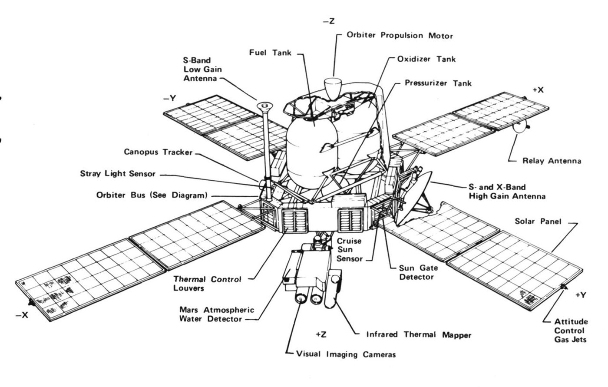
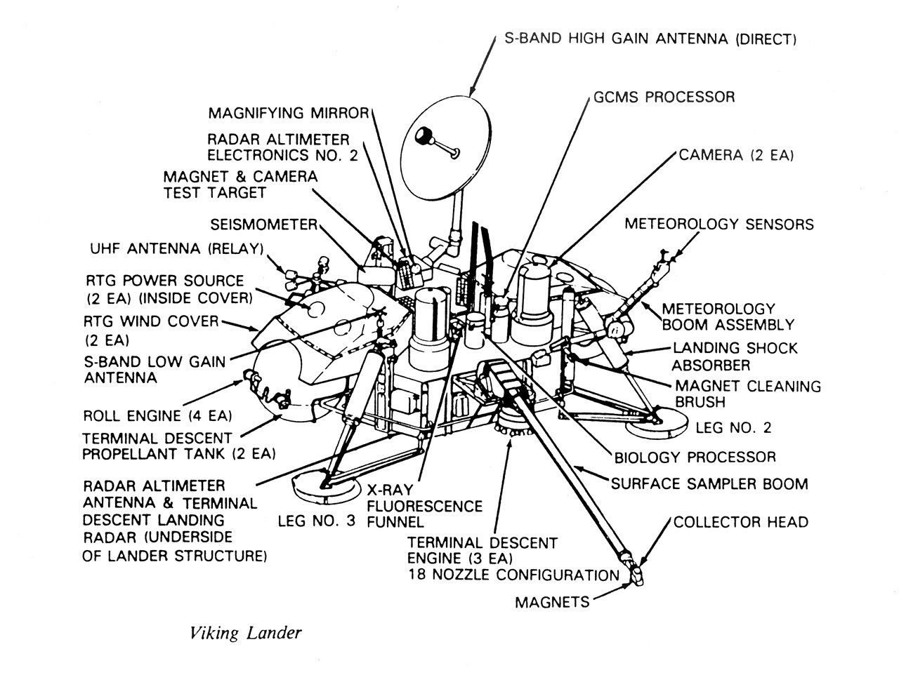

Home / Mars / Viking 1 and 2 Landers
Viking 1 and 2 Landers
The first American robots to work on Mars, searching for life.
Mars1976-1982Chryse and Utopia Planitia

At a glance
| Landers | Viking 1 and 2 |
|---|---|
| Lander mass | about 600 kg |
| Power | two radioisotope generators |
| Sites | Chryse Planitia and Utopia Planitia |
| Biology tests | 3 experiments per lander |
Overview
The first picture from Viking 1 arrived minutes after landing and showed a footpad in a rocky, reddish plain. Controllers had picked the landing site from orbiter images, but the real surface was rougher than expected. Viking 2, much farther north, recorded frost on the ground in winter, and weather instruments gave Mars its first long-term weather record.
Throughout history, Mars had been in sight, but never within reach — until July 20, 1976, when NASA’s Viking 1 lander touched down safely and began transmitting the first images from the surface of the Red Planet. Viking 1 broke ground on Mars surface exploration, beginning an effort that continues through today. Mars missions ever since, and those yet to come, seek to uncover whether the planet’s once warm and wet climate was ever habitable to some form of life, as our discoveries help inform sustainability for human exploration in the future. These missions continue building on what the Vikings began.
NASA's Viking 1 made the first truly successful landing on Mars. The Soviet Mars 3 lander claimed a technical first with a survivable landing in 1971, but contact was lost seconds after it touched down.
Where it began
Viking launched in 1975 as twin orbiter-and-lander pairs. Orbiters scouted the landing places, then landers descended with parachutes and rocket engines.
Viking 1 was the first of a pair of complex deep-space probes that were designed to reach Mars and collect evidence on the possibility on life on Mars.
Each spacecraft was composed of two primary elements, an orbiter (5,157 pounds or 2,339 kilograms) and a lander (2,156 pounds or 978 kilograms). The orbiter design borrowed heavily from the Mariner spacecraft buses, or the main body and infrastructure, while the lander looked superficially like a much larger version of the Surveyor lunar lander.

The mission
Viking 1 landed on 20 July 1976, and Viking 2 followed on 3 September.
Prior to launch, the batteries of the first spacecraft were discharged, prompting NASA to replace the original first spacecraft with the second, which was launched as Viking 1.
After three course corrections (Aug. 27, 1975, June 10, 1976, and June 15, 1976), the spacecraft entered orbit around Mars June 19, 1976. Initial orbital parameters were 932 × 31,255 miles (1,500 × 50,300 kilometers). The following day, the orbiter moved into an operational orbit at 932 × 20,381 miles (1,500 × 32,800 kilometers).
The same day, when the orbiter began transmitting back photos of the primary landing site in the Chryse region, scientists discovered that the area was rougher than expected. Using the new photos, scientists targeted the lander to a different site on the western slopes of Chryse Planitia (Golden Plain).
The lander separated from the orbiter at 08:32 UT July 20, 1976, and after a complicated atmospheric entry sequence during which the probe took air samples, Viking Lander 1 set down safely at 22.483 degrees north latitude and 47.94 degrees west longitude at 11:53:06 UT July 20, 1976. It landed about 17 miles (28 kilometers) from its planned target.
Once down, the spacecraft began taking high-quality photographs (in three colors) of its surroundings. Besides high-resolution images, the lander also took a 300-degree panorama of its surroundings that showed not only parts of the spacecraft itself but also the gently rolling plains of the environs.
Instruments recorded temperatures ranging from minus 123 degrees Fahrenheit (minus 86 degrees Celsius) before dawn to minus 27 degrees Fahrenheit (minus 33 degrees Celsius) in the afternoon. The seismometer on the lander was, however, inoperable.
How it worked
Landers took the first colour pictures from the surface, tracked weather, measured soil chemistry and ran experiments checking soil for signs of living organisms.
Both NASA Viking missions used a combination of orbiter and lander to explore Mars in unprecedented detail.
In total, the two Viking orbiters returned 52,663 images of Mars and mapped about 97 percent of the surface at a resolution of 984 feet (300 meters) resolution. The landers returned 4,500 photos of the two landing sites.
What it found
Results were puzzling: soil reacted strongly, but no organic chemicals were found, so the experiments are generally read as chemistry rather than life. Viking's maps and weather records shaped Mars exploration for decades.
On July 28, 1976, the lander’s robot arm scooped up the first soil samples and deposited them into a special biological laboratory that included a gas chromatograph mass spectrometer.
The cumulative data from the four samples collected could have been construed as indicating the presence of life (weak positive), but the major test for organic compounds using the gas chromatograph experiment (capable of detecting organic compounds that comprised more than 10-100 parts per billion in the soil) gave negative results.
Data showed an abundance of sulfur, certainly different from any known material found on Earth or the Moon.

Why it was left behind
Viking 2's lander ended in 1980 as power declined. Viking 1 lasted until November 1982, when a software update accidentally wrote over antenna-pointing data and the lander could no longer talk to Earth.
While the primary mission for both Viking 1 and Viking 2 ended in November 1976, activities continued through the Extended Mission (November 1976 to May 1978) and the Continuation Mission (May 1978 to July 1979). Viking 1’s orbiter then continued a Survey Mission from July 1979 to July 1980.
The lander continued to return daily (and then eventually weekly) weather reports as part of the Viking Monitor Mission. In January 1982, it was renamed the Thomas Mutch Memorial Station in honor of Thomas A. Mutch (1931-1980) the leader of the Viking imaging team who had died Oct. 6, 1980.
The lander operated until Nov. 11, 1982, when a faulty command sent from Earth resulted in an interruption of communications. Further attempts to regain contact proved to be unsuccessful.
Where it is now
Both landers remain at their landing sites. Viking 1's is named Thomas Mutch Memorial Station.
The orbiter, after taking many more high-resolution images of the planet and its two moons, far superior than those from Mariner 9, was shut down Aug. 7, 1980, after it ran out of attitude control propellant on its 1,489th orbit around Mars.
The biology experiments remain debated. One test showed gas released from soil mixed with nutrients, which seemed like life, but another instrument found no organic molecules. Most scientists now think reactive chemicals in the soil caused the effect. Viking's orbiters photographed most of Mars and shaped planning for later missions.
Timeline of events
- Aug-Sep 1975 Viking 1 and 2 launch
- 20 Jul 1976 Viking 1 lands
- 3 Sep 1976 Viking 2 lands
- 11 Apr 1980 Viking 2 lander ends
- 11 Nov 1982 Contact with Viking 1 lander is lost
1982
Viking 1 lander lost after a command error, 11 November.
Read more on NASAText and images adapted from NASA mission pages.